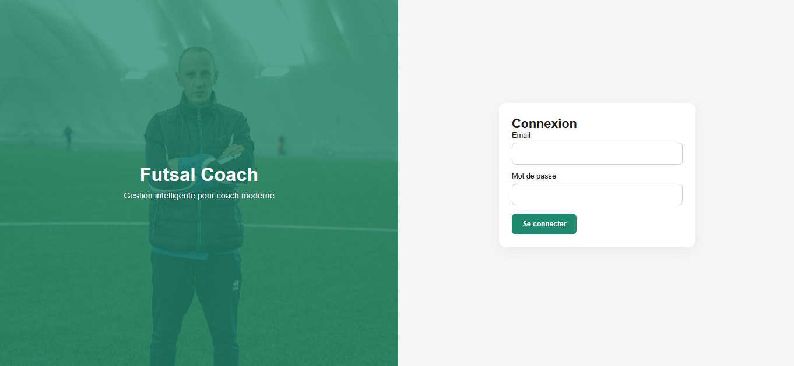
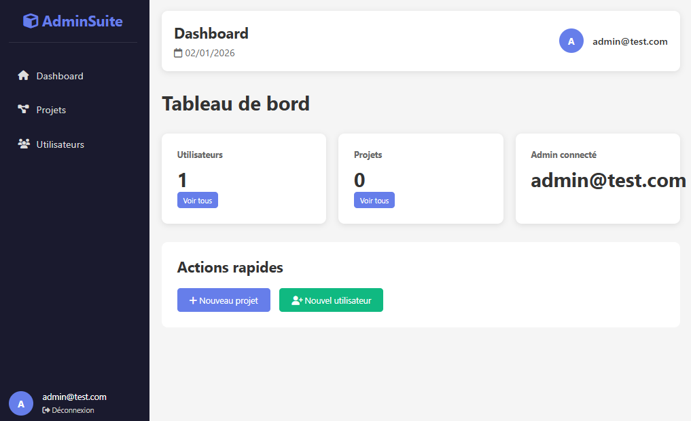
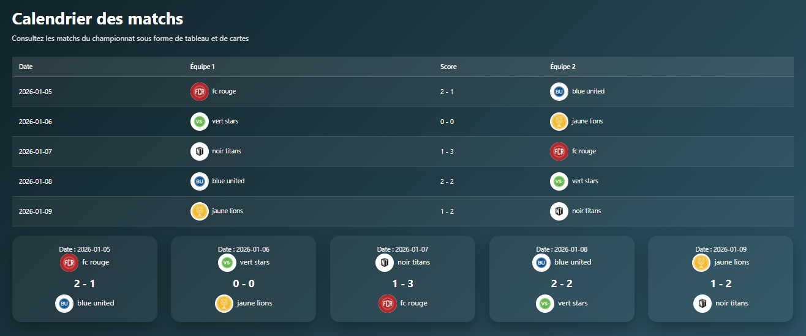
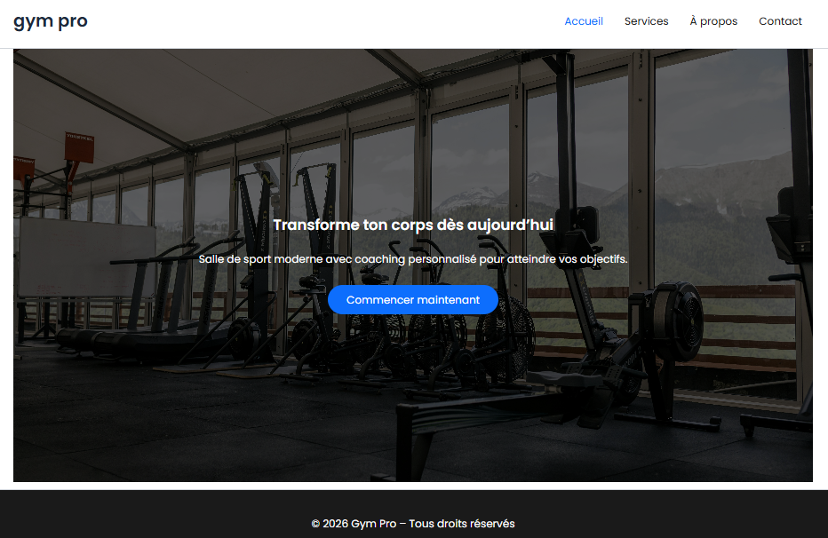

Développeur web spécialisé en PHP et MySQL. Je développe des applications web complètes avec JavaScript et WordPress pour créer des interfaces modernes, dynamiques et fonctionnelles.
Je suis développeur web spécialisé en PHP et MySQL. J’aime créer des applications web simples et efficaces qui permettent de gérer des données et résoudre des problèmes concrets.
Développement d'applications avec PHP et MySQL.
Interfaces modernes avec HTML CSS JavaScript.
Gestion du code avec Git et GitHub.
Création de sites vitrines avec WordPress et l’éditeur Gutenberg.

Application web pour gérer les joueurs, les notes et organiser un tableau tactique.

Dashboard web pour gérer projets et utilisateurs avec authentification et statistiques.

Application web pour suivre équipes, joueurs et matchs avec un dashboard structuré.

Site vitrine moderne réalisé avec WordPress et Gutenberg, responsive et optimisé.